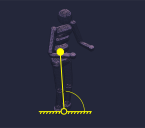
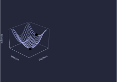
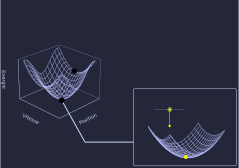
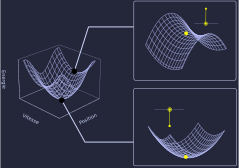

Mon travail
- Comprendre le mouvement à jambes
- Créer des mouvements agiles
- A partir de modèles mathématiques
Pourquoi je ne tombe pas ?

Etudier un humain c'est compliqué
- Plein de façons de bouger (degrés de libertés)
- Contact avec le sol complexe à modéliser
- Plein de couplages

Vu de loin, le problème est simple
- Un humain = de la masse qui peut basculer d'avant en arrière
- On peut voir le contact avec le sol comme une cheville.
- On obtient un pendule inverse !
Comment décrire un pendule ?
- Une position - un angle
- Une vitesse - décrire le futur
- Une énergie - à quel point le pendule est "agité"


